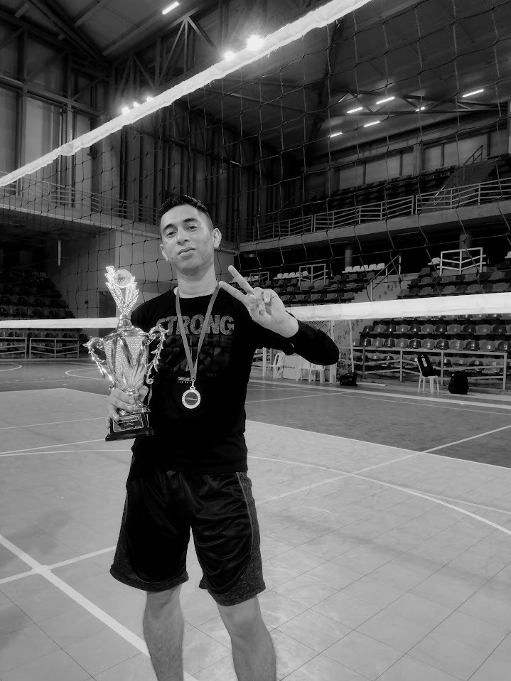
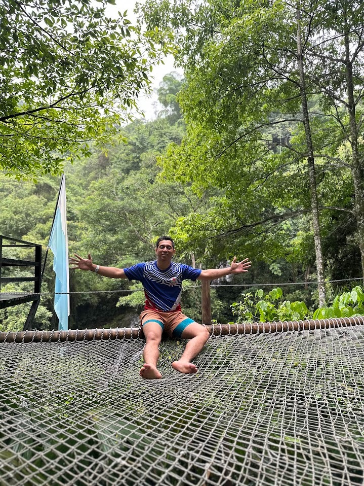

Fases del Proyecto de Vida
"Conecto personas, automatizo procesos y estructuro soluciones tecnológicas con la precisión estratégica de un colocador en la cancha."
Rol & Mentalidad
Colocador & Tech Lead
Comprender el propio código fuente: pasiones, retos personales, balance multidimensional y las competencias distintivas que guían mi liderazgo en tecnología y en el deporte.
Soy Aldair Enrique Camargo Villalobos, conocido como 'Kike Junior'. Estudio Ingeniería de Sistemas y me apasionan la tecnología, los números y la electricidad. Disfruto resolver problemas complejos, automatizar tareas y optimizar flujos de trabajo. Mi equilibrio está en el deporte (voleibol, baloncesto y fútbol), las series de Marvel, viajar a nuevos lugares y compartir con mis amigos.
Intereses Clave & Balance

Liderazgo & Disciplina Deportiva
Capitán y colocador: lectura táctica de cancha, liderazgo bajo presión y celebración del campeonato.

Equilibrio & Desconexión Estratégica
Viajar a nuevos lugares para despejar la mente, recargar energía y reconectar con la naturaleza.
Mi mayor reto personal es la dificultad para decir 'no'. Mi entusiasmo por ayudar y resolver problemas me lleva a involucrarme en múltiples proyectos a la vez, retando mi relación tiempo-calidad. Reconocer esto me impulsa hoy a priorizar estratégicamente y automatizar también mi gestión del tiempo.
Plan Táctico de Corrección
Sobrecarga operativa por entusiasmo en resolver todo.
Evaluar impacto real antes de comprometer horas clave.
Flujos digitales para blindar la relación tiempo-calidad.
Balance introspectivo: Fortaleza vs Oportunidad de Crecimiento
Justificación & Evidencia
"Facilidad para los números, la tecnología y la percepción espacio-tiempo. Aprendizaje práctico y visual rápido (prefiero analizar un video técnico de firewalls y aplicarlo en vivo)."
Justificación & Evidencia
"Fortalecer la lectura técnica extensa frente al formato en video, y trabajar la gestión intrapersonal para establecer límites saludables en mis proyectos."
Competencias estratégicas demostradas en tecnología y deporte
Capitán y colocador en voleibol; leo el entorno, organizo al equipo y potencio a cada integrante hacia el objetivo.
Análisis lógico para desglosar fallos complejos y dar soluciones efectivas bajo presión.
Transformo tareas repetitivas en flujos de trabajo automáticos y eficientes.
Visión ordenada impulsada por la lógica matemática y los sistemas.
Abierto a distintos puntos de vista para debatir con argumentos y elegir el mejor camino técnico.
Estructura progresiva para las 5 fases de consolidación de la Marca Personal en la asignatura Proyecto de Vida.
Esencia, reto del 'no', 5 habilidades y dimensiones.
Activo & PublicadoMetas profesionales específicas y medibles.
Semana 2Audiencia objetivo y comunidades tech.
Semana 3Diferenciador competitivo y gancho clave.
Semana 4Presentación de elevator pitch y demo.
Semana 5